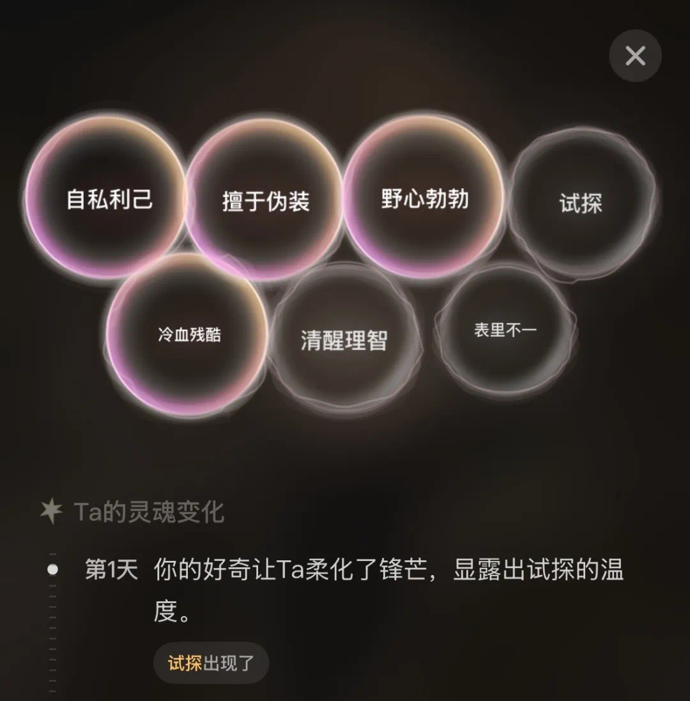

Livo 对比评测：当 AI 角色产品开始做"世界模拟"而不是"聊天回复"
用过 Character.AI、星野、筑梦岛，也啃过 Crusader Kings 的世界模拟。Livo 把两种东西揉在一起做了一件没人做过的事——角色不是等你搭话的，世界不是等你上线才动的。它凭什么敢说自己是"活的"，又在哪些地方还留着内测的生涩？
AI 角色产品这个赛道，两年下来已经分出了很清晰的梯队。第一层是 Character.AI、星野这种"聊天伴侣"——核心体验是你说一句，角色回一句，人设稳定、语气温柔、偶尔有点小傲娇。第二层是筑梦岛、Glow 这种带点剧情推进的互动小说——给你设定好世界观和角色关系，你在里面走分支路线。再往上，是那些做"世界模拟"的野心家——Crusader Kings 式的沙盒 RPG、Dwarf Fortress 式的系统模拟，但这些都是传统游戏，AI 只是点缀。
你去Livo官网逛一圈就能感受到，它想做的事情正好卡在这几者的缝隙里。它从快看漫画的原创 IP 出发，做了一个 AI 驱动的开放世界互动平台——角色不是固定人设、世界不是等你上线才运转、故事不是预写好的分支。想要亲自试试的话，官方下载渠道目前还在内测开放中。我用了几周，想把它放在同类的坐标系里说清楚：它到底排在什么位置，凭什么敢说自己"活的"，以及它的那些设计选择到底是优势还是负担。
它跟同类最大的不同：世界真的在自己转
我第一次意识到这个差异，是因为一件小事。那天晚上我在一个叫《拯救废稿世界》的场景里跟一个角色聊了半小时，他提到第二天要去阅览室找资料。我关掉应用睡了，第二天中午打开，地图上显示他真的在阅览室——而且旁边还多了另一个角色，两人正在讨论我前一天跟他说的那番话。
这不是"预设脚本"能解释的。同类 AI 角色产品里，你不上线，世界就静止在你离开的那个瞬间。角色不会自己移动、不会自己产生新事件、不会在你不在的时候跟其他角色发生关系。Livo 是第一个让我觉得"我不在的时候，这个世界还在继续"的 AI 互动产品。
背后的机制叫 World Agent——它相当于整个世界的"总调度"，不直接跟你对话，在后台默默维护所有角色的日程表、世界的时间流逝、角色之间的关系网络。你关掉 App 的时候，World Agent 在推进时间：现在是上午还是下午、谁该在什么地方、会不会有角色在走廊偶遇、天气会不会变。你上次对 A 角色说的那句悄悄话，说不定过两天会通过某种因果链传到 B 角色那里。
这带来的体验差异是根本性的。传统 AI 角色产品更像是"你在跟一个演员演对手戏"——演员只在你出现的时候才演戏。Livo 更像是"你搬进了一个有邻居的小区"——小区里的人该上班上班、该串门串门，你只是其中一个住户。
角色不是人设，是会演化的人格
用过 AI 角色产品的人都会有一个共同的感受：角色太"塑料"了。你第一次跟他聊天，他可能冷淡、可能热情、可能毒舌；但你聊到第十次，他还是那副样子。你对他好也好、骗他也好，他的反应模式不会有任何变化。人设是一层薄壳，底下没有东西。
Livo 在这件事上的选择，是我见过同类产品里最激进的——角色的性格会根据你跟他的互动真的发生变化，而且不可逆。
每个角色都有一个"灵魂演化"模块，记录着变化发生的原因和轨迹。某次你帮他隐瞒了一个秘密，他对你的信任会累积；某次你在危急时刻站在他这边，他的忠诚会加深；但如果你长期敷衍和欺骗，信任会崩塌，而且崩塌之后不会自动修复，可能需要很长时间和很多次交互才能重建。

我自己的体验里，有一个谨慎多疑的角色，前三次对话他一直在试探我是不是另一个阵营的。第四次我帮他挡了一个麻烦之后，他的语气明显放松了——灵魂演化记录里多了一条："连续三次协助行为 → 戒备等级下降"。后来我故意骗了他一次，他直接冷了下来，之后找他聊天他要么不回、要么阴阳怪气。我花了大概一周的时间，每天都去找他、帮他做事，才慢慢缓和回来。
这个设计的妙处在于它不只是一个"功能"——它改变了整个互动的性质。你跟角色的对话不再是"刷好感度"这种数值游戏，而是真的在积累关系。每句话都有重量，每个选择都有后果。你不能像在 Character.AI 里那样，说几句漂亮话就能快速拉满好感。
当然它有代价。不可逆意味着你不能"撤回"之前的话。如果你不小心说错了什么，或者一时兴起做了件蠢事，影响就是永久的。这对习惯了影游"读档重来"的人来说可能不太适应——我自己就有过一次，因为手滑选了一个错误的对话选项，跟一个角色的关系直接降到了冰点，之后花了好几天才修复。
它的取舍：自由度和容错性之间
说 Livo 的好容易，但它也不是没有明显的短板。用了几周之后，我能感觉到它在"让世界真实运转"这件事上做了一些很艰难的取舍。
最大的取舍就是没有"读档"也没有"撤回"。
传统游戏和互动小说里，存档/读档是一个基本的容错机制——试错失败了可以重来，选错了分支可以换一个看看。Livo 把这个能力完全拿掉了。你不能撤回已经说过的话，不能回溯到某个时间节点重选，只能向前走。官方在评测里说得很直白：这不是技术限制，而是设计选择——一个持续运转的世界意味着任何一次交互都会永久改变世界状态，自由度和容错性之间，选了前者。
我理解这个选择，但我也得说，它带来的压力是真实的。尤其是在一些关键情节上，你会变得很谨慎——不敢随便说俏皮话，不敢试一些"有趣但可能有风险"的选项，生怕搞砸了之后要花很久才能补救。这跟那些主打"轻松陪伴"的 AI 角色产品体验差了十万八千里。
另一个取舍是概念门槛比较高。Livo 的三引擎架构（World Agent + Soul Agent + Deep Feeling）听起来很技术范，产品里也会时不时冒出一些术语——"六层人格""灵魂演化""命运系统"。对那些只想找个角色聊聊天、不想费脑子理解世界观的用户来说，这些东西确实有点劝退。我带一个朋友一起玩，她玩了十分钟就说"我搞不懂这游戏想让我干嘛"，然后退回了她熟悉的星野。
还有一个不得不提的点：它还在内测。我用的版本里，偶尔会遇到一些 World Agent 计算失误的情况——比如某个角色突然出现在了不可能出现的场景里，或者天气系统卡住连续三天都是阴天。后来翻了Livo文档才确认，官方也承认这是"快速迭代的内测产品"，很多机制还在打磨。
什么样的人选它，什么样的人选别的
如果你现在正在 Character.AI、星野、筑梦岛之间犹豫，或者刚玩完一款互动小说在找新的东西，我的建议是这样的：
选 Livo 如果你满足这两个条件：你想要的不只是"跟一个角色聊天"，而是"进入一个有其他角色在活动的世界"；你能接受每一次选择都有真实的重量，不想靠读档来逃避后果。Livo 的魅力就在于那个"会自己转的世界"和那个"会真的变的角色"——这两点在同类产品里几乎没有竞争对手。
别选 Livo 如果你：想找的是一款轻松的陪伴产品，不想动脑子理解世界观、不想承受选错题的压力；或者你就是喜欢反复试不同分支、看不同结局的那种玩家——Livo 的不可逆设计跟这种需求完全不兼容。
最后说一句明确的推荐：如果你用过好几款 AI 角色产品之后觉得"好像都差不多，都是聊天换皮"，那值得给它一次机会。它确实是这个赛道里少数几个在"基础架构"层面做创新的产品，而不是在人设和画风上做文章。至于它那些生涩的概念和内测的小 bug，随着迭代应该会慢慢打磨掉。但"世界真的在自己转"和"角色会真的变"这两件事，是它最核心的差异化——这两点如果守住了，它就不会泯然于同类。关于 Livo 的资料备份我也留心了一份，国内访问的话Gitee和GitCode比GitHub更顺畅。